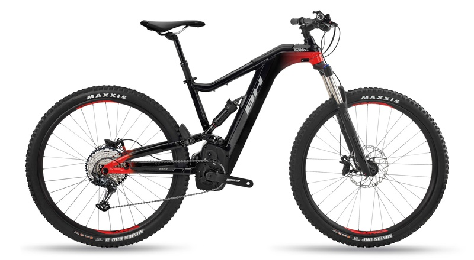
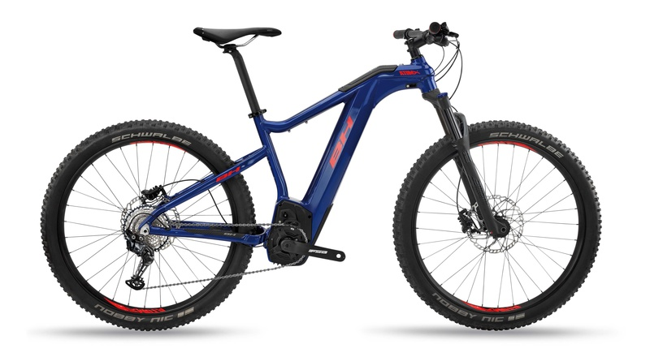
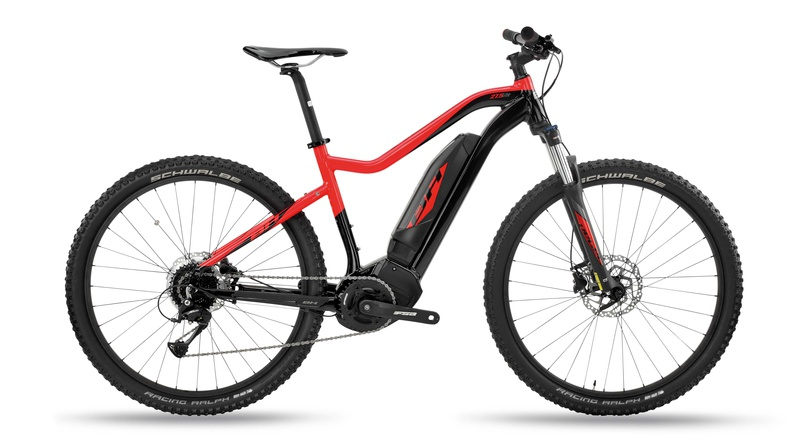
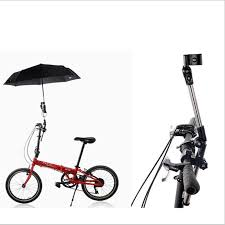
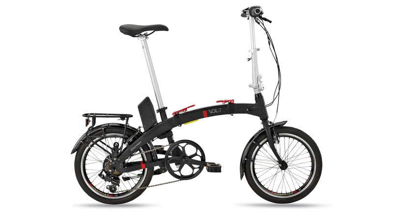
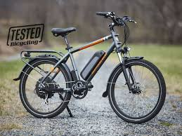
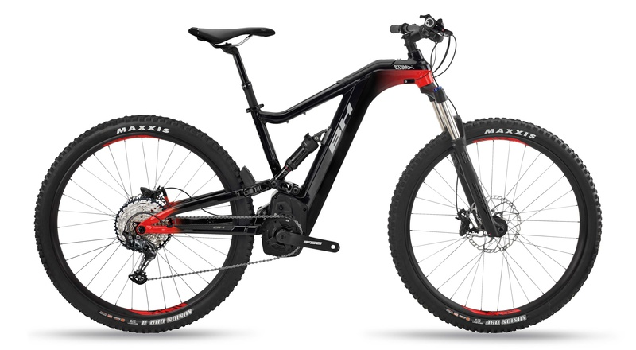
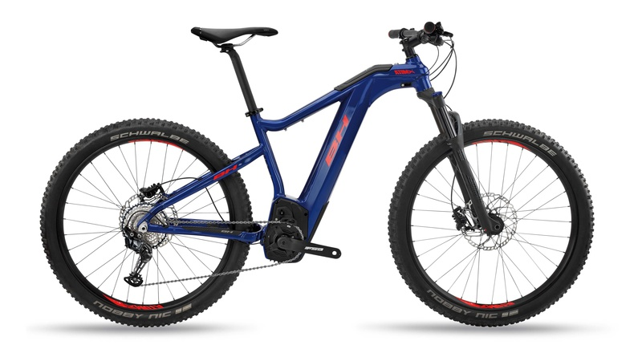
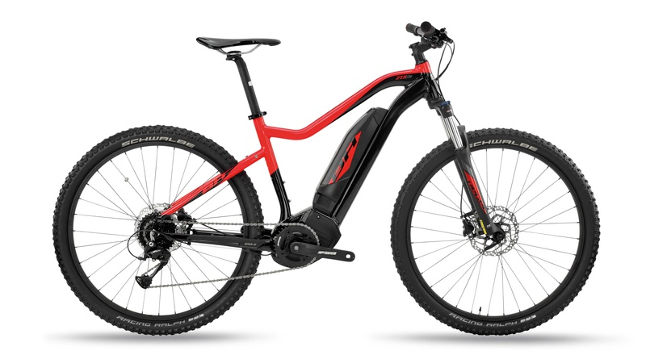
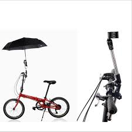
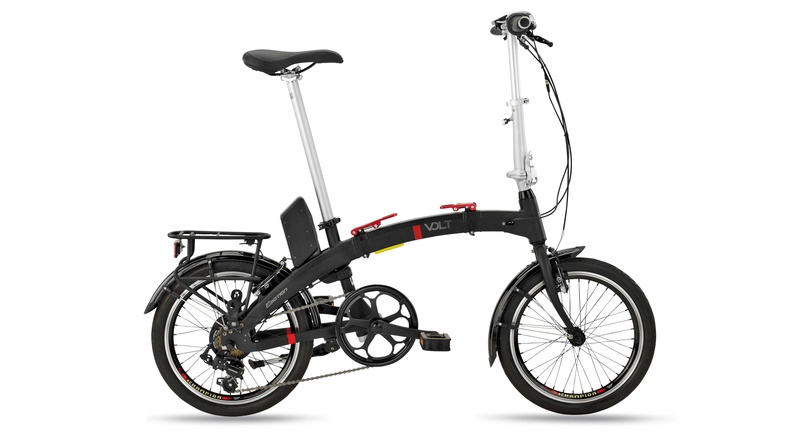
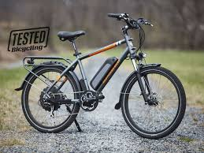
 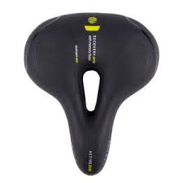
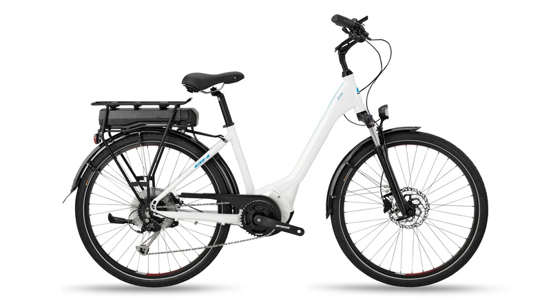
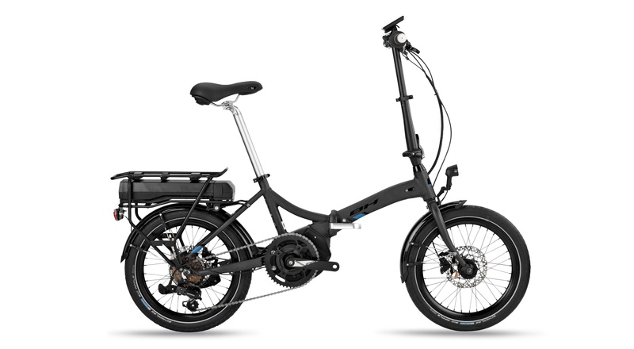
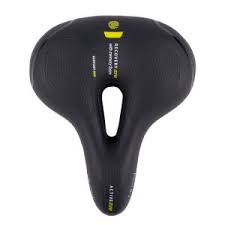
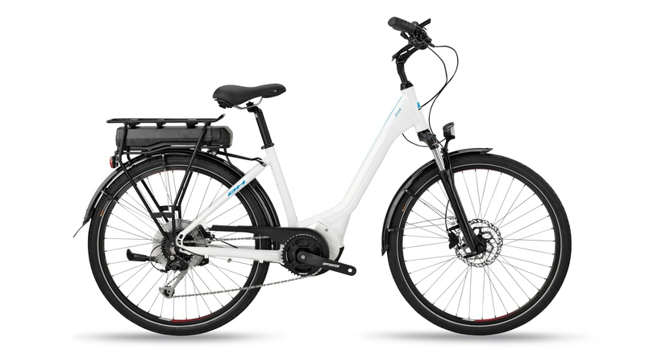
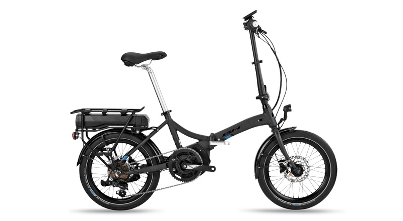
¿Que es una bicicleta eléctrica?
En nuestro país, se considera una bicicleta eléctrica a aquellos vehículos con pedales que equipadas con un motor eléctrico auxiliar,…Leer más
¿Como funciona una bici eléctrica?
Las bicicletas eléctricas incorporan un Sistema de Pedaleo Asistido (también denominado P.A.S. o Pedelec). Este sistema se activa mediante un sensor que determina la fuerza de nuestro pedaleo,Leer más >
La energía es suministrada por una batería que en muchos casos podemos extraer de la bicicleta, pero que no es obligatorio. Que podemos cargar en cualquier enchufe corriente (atención a las instrucciones de aquellas adquiridas por fuentes no convencionales). Y que necesitan un tiempo de carga de entre 2-8 horas dependiendo el modelo (para más información, consulta la sección de bicicletas, donde se detallan las casracterísticas de cada modelo).
¿Cual es la velocidad y autonomía alcanzan?
Dependiendo del modelo de bicicleta eléctrica, la velocidad varía desde los reglamentarios 25Kms/h hasta los 40Kms/h, e incluso más.Leer más >
¿Cual es la vida útil de una bateria?
Esta es una de las preguntas frecuentes mas habituales. Las baterías están sujetas a desgaste: Con el paso del tiempo nuestra batería podrán almacenar menos electricidad (y se cargarán mas rápidamente) y por lo tanto tendrán menos autonomía. Leer más >
¿Qué tipo de baterías existen y cuáles son las diferencias?
Hay tres categorías de baterías que se suelen encontrar: Leer más >
- Baterías de Plomo Ácido Está constituida por dos electrodos de plomo. Son las baterías más económicas por su fácil fabricación. Tienen el inconveniente de su elevado peso y que no admiten sobrecargas ni descargas profundas, viendo seriamente disminuida su vida útil. Son altamente contaminantes y tienen una baja densidad de energía: 30 Wh/kg. Son las típicas que tienen los coches de combustión para activar el motor de arranque.
- Baterías de níquel-hierro (Ni-Fe) También denominada de ferroníquel. El cátodo estaba compuesto por hileras de finos tubos formados por laminas enrolladas de acero niquelado, estos tubos están rellenos de hidróxido de níquel u oxi-hidróxido de níquel (NiOOH). Las reacciones de carga/descarga son completamente reversibles y la formación de cristales de hierro preserva los electrodos por lo cual no se produce efecto memoria lo que confiere a esta batería gran duración. La desventaja que tiene es que sólo posee una eficiencia del 65% y poseen poca densidad, 40 Wh/kg.
- Baterías de níquel-cadmio (Ni-Cd) Utilizan un cátodo de hidróxido de níquel y un ánodo de un compuesto de cadmio. El electrolito es de hidróxido de potasio. Esta configuración de materiales permite recargar la batería una vez está agotada, para su reutilización. Sin embargo, su densidad de energía es de tan sólo 50 Wh/kg y el efecto memoria es muy alto.
- Baterías de iones de litio (Li-ion) Son las más comunes hoy en día. Utilizan un ánodo de grafito y un cátodo de óxido de cobalto, trifilina (LiFePO4) u óxido de manganeso. Su desarrollo es más reciente, y permite llegar a altas densidades de capacidad de hasta 115 Wh/kg. No admiten descargas y sufren mucho cuando éstas suceden; por lo que suelen llevar acoplada circuitería adicional para conocer el estado de la batería, y evitar así tanto la carga excesiva como la descarga completa. Otro de los inconvenientes que plantean es que no admiten bien los cambios de temperatura.
¿Cual es el coste de una batería?
Las baterías de las bicicletas eléctricas, aunque su precio pueda parecer alto, Leer más >
¿Motor delantero o trasero?
Esta es una de las preguntas frecuentes mas habituales y mas dificiles de responder. Depende del uso que le demos. El motor delantero nos da la ventaja de no poseer engranajes internos y equilibrar mejor los pesos de la bicicleta electrica. Leer más >
¿Son las baterías perjudiciales para el medio ambiente?
Una vez finalizado el ciclo de vida de la batería, deberemos depositarla correctamente en los puntos indicados de reciclaje, Leer más >
¿Las bicicletas eléctricas no contaminan, pero no contaminamos al generar la energía eléctrica?
Esta es una de las preguntas frecuentes mas interesantes. La implementación de energías limpias y renovables se persigue en paralelo al despliegue de los vehículos eléctricos. Actualmente en España casi un 40% de la electricidad Leer más >
¿Cuales son las normas para circular con una bicicleta eléctrica?
Si nuestra bicicleta eléctrica cumple con Directiva Europea 2002/24/CE explicadas en la primera pregunta, no necesitas permiso ni seguroLeer más >
Por lo que respecta al uso del casco, según el artículo 47 del Real Decreto Legislativo 339/1990, de 2 de marzo, los conductores y, en su caso, los ocupantes de bicicletas estamos obligados a utilizar el casco de protección en las vías interurbanas. Esta obligación solo puede exceptuarse por los reglamentos de acuerdo con las recomendaciones internacionales en la materia y atendiendo a las especiales condiciones de los conductores minusválidos.
¿Es verdad que una bicicleta eléctrica permite ahorrar dinero?
Por supuesto que si. De manea obvia, si sustituimos los desplazamientos de cualquier otro vehículo, la bicicleta eléctrica nos permitirá ahorrar dinero.Leer más >
¿Es un buen momento para comprar una bicicleta eléctrica o es mejor esperar algún tiempo a que la tecnología siga evolucionando?
Aunque es evidente que la tecnología no deja de avanzar y siempre las mejoras que podemos observar en los circuitos especializadosLeer más >